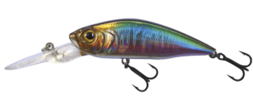

Hi, welcome! This page is dedicated to introducing various commonly used lures bait in the Melbourne area. Whether you're a beginner or an experienced angler, you'll find helpful information here. If you have any questions or requests, feel free to scroll to the bottom of the page where you'll find my contact details.
Soft plastics are among the most popular lure types for freshwater fishing across Melbourne. Their lifelike action and versatility make them ideal for targeting species such as rainbow trout, golden perch, and Australian bass. In fact, almost all freshwater fish in Melbourne show interest in it.
Features a T-shaped tail that creates strong vibrations mimicking swimming baitfish
All species
Use with a jighead, steady retrieve or hop along the bottom
V-shaped tail provides a subtle, natural swimming action
Trout and golden perch
Slow retrieve with occasional pauses
Curled tails produce fine vibrations, ideal for less aggressive fish
Golden perch, bass, trout
Drag along the bottom or retrieve with slow twitches
Mimic prawns or bottom-dwelling creatures, great for bottom-feeding species
Silver perch
Bounce along the bottom or leave it still for passive bites
Slim, flexible baits that resemble worms or small eels
Trout, bass
Rigged Wacky or Neko style for finesse presentations
Hardbody lures are also widely used throughout Melbourne's rivers, lakes, and urban fishing spots (such as Karkarook Lake, Devilbend Reservoir, etc.). They're ideal for covering water quickly and triggering reaction strikes.
Slim-profile lures that mimic baitfish, available in floating, suspending, or sinking versions
Trout, perch, bass
Use a twitch-and-pause retrieve to mimic a fleeing fish
Short, stubby lures with a diving lip that creates vibration and sound
Golden perch, trout, redfin, murray cod
Steady retrieve or bounce along bottom structures
Flashy spinning blades create both visual and vibration attraction
Trout, golden perch, murray cod
Straight retrieve, great for murky water
Float on the surface, attracting fish with splashes or "popping" sounds
Trout, redfin, murray cod
Use during low-light hours with rhythmic pops or zig-zag movement
Metal lures with a fluttering action and light reflection
Trout, redfin,murray cod
Cast far and retrieve slowly or with jerks to trigger bites